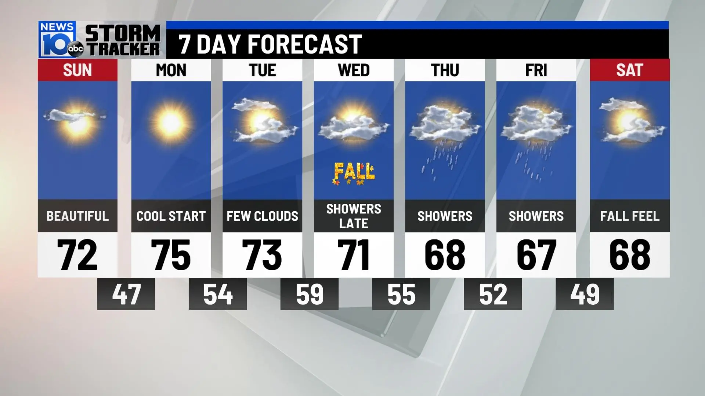

• Breaking: Heatwave alert issued for Northern India • Ghaziabad temperature to reach 40°C today • Air quality moderate in Loni area • Weekly forecast shows rising temperatures • Stay hydrated and avoid direct sunlight during peak hours •

Today’s minimum temperature in Ghaziabad is recorded at 26°c (degrees celsius), and the maximum temperature is expected to go as high as 40°c (degrees celsius). Throughout the day, the temperature is likely to hover around 39°c (degrees celsius). The wind will blow at the speed of 4.39, and with the gust of 6.73, it will blow at 135 degrees.The sun will rise at around 06:02 AM in the morning, and around 06:41 PM, it will set in the evening. As per the weekly weather forecast of Ghaziabad, the temperature expected on the different days of the week will be 40 degrees Celsius on Tuesday, 42 degrees Celsius on Wednesday, 43 degrees Celsius on Thursday, 41 degrees Celsius on Friday, 39 degrees Celsius on Saturday, 40 degrees Celsius on Sunday and 41 degrees Celsius on Monday.
Today, Air Quality Index (AQI) in Loni, Ghaziabad, UP stands at PM10 180. This level of AQI comes under the Moderate Category.As per System of Air Quality and Weather Forecasting And Research (SAFAR-India ) An AQI for PM10 between zero and 50 is considered 'good', 50 and 100 'satisfactory', 100 and 200 'moderate', 200 and 300 'poor', 300 and 400 'very poor', and 400 and 500 'severe'.